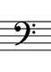
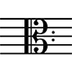
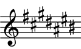
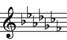

De sleutels
Sol-sleutel
De sol-sleutel is de meest voorkomende sleutel. Als we noten gaan aanduiden op een notenbalk dan gebeurd dit standaard op sol sleutel. Wanneer je noten leest van een partituur wanneer je gaat zingen dan lees je in de sol-sleutel.
Fa-sleutel

De fa-sleutel is de op een na meest gebruikte sleutel. Deze sleutel word gebruikt om lagere noten aan te geven. Als je bijvoorbeeld een muziek stuk hebt waarin veel lage noten voorkomen zal je de notenbalk moeten verhogen of verlagen. Dit doe je door zelf streepjes toe te voegen. Natuulijk is dit tijdsintensief als je dit vaak moet doen en je kan gemakkelijk fouten maken of onduidelijk iets opschijven. Daarom kan je de fa-sleutel gebruiken en duid je alle noten 1 octaaf lager aan. Op de volgende figuur zie je 2 maal de zelfde noot afgebeeld enkel bij een andere sleutel. zo heb je dus meer plaats voor lagere noten in de fa sleutel zonder dat je hulp lijntjes moet gebruiken.

Do-sleutels

De Do-sleutels zijn sleutels die tussen de sol-, en de fa-sleutel liggen. Deze worden zeer weinig gebruikt maar ze bestaan wel. Wanneer je een lied maakt dat hoofdzakelijk afspeelt tussen de beide sleutels kan je opteren om te werken met veel hulplijntjes. Deze keuze hadden we al besproken en afgekerud. De tweede optie is wisselen tussen de sol-, en fa-sleutel tijdens het hele lied. Maar als je dit te veel doet kan dit verwarrend zijn voor de persoon die de partituur moet leren. De laatste optie en de beste is dus om te kiezen voor een van de twee do-sleutels. Dan past alles netjes op een notenbalk en kan je heel het lied in één sleutel schrijven.
De sleutelnamen worden toegekent aan de sleutels naar gelang welke noot op de lijn staat die tussen de 2 puntjes loopt achter elke sleutel. Zo is de noot die op die specifieke lijn staat bij de sol-sleutel een sol. De lijn die door de puntjes loopt bij de fa-sleutel is een fa, en het zelfde geldt voor de do-sleutels. De noten die op de lijnen staan die door de puntejes lopen achter do-sleutels zijn dus uiteraard do's.
notenbalken
De notenbalk zijn de 5 horizontale lijnen waar we alles op schrijven dat de mensen nodig hebben om te weten welke noot of welke toon bedoeld wordt
Eerste noot: Do ~ C
De aller eerste noot die we leren is de Do. Deze noot krijgt heeft als letterbenaming de letter C gekregen. Zoals je op de afbeelding kan zien passen er op de sol-sleutel meerdere do's. Op een notenbalk plaats je de noten altijd in de zelfde volgorde. Als je alle noten gehad hebt dan start je terug opnieuw met de eerste noot. Let goed op waar je de noot exact plaatst. je kan de noten altijd op een lijntje plaatsen of tussen 2 lijntjes. zo tel je dus dat de hoge do 7 plaatsen hoger staat dan de lage do. Dit is ook logisch want er zijn 7 verschillende noten.
Tweede noot: Re ~ D
De tweede noot die we bespreken is de re. Deze heeft de letter D gekregen als letterbenaming. Zoals bij de do kan je de re ook hoog en laag schijven. je telt gewoon zeven plaatsjes boven de lage re of je telt één plaats hoger dan de hoge do. Op deze manier merk je dat je kan beginnen spelen met waar je de noten schrijft op een noten balk.
Derde noot: Mi ~ E
De letterbenaming van de mi komt overeen met de letter E. De mi staat op de onderste lijn van een notebalk in de sol-sleutel. Je kan de mi ook hoog in de notenbalk schrijven.
Vierde noot: Fa ~ F
De fa heeft als letterbenaming de letter F gekregen. Als je deze noot schrijft onderaan de notenbalk ligt deze tussen de onderste 2 lijnen. Als je de hoge fa wilt noteren dan komt deze op de bovenste lijn van de notenbalk te staan. De fa is iets anders dan de andere noten van de notenbalk. Tot nu toe was de onderlinge afstand tussen 2 noten altijd een hele toon. de afstand tussen de fa en de bovenliggende noot is maar een halve toon. Dit is iets dat je moet weten, dit zie je niet aan de notatie op de notenbalk!
Vijfde noot: Sol ~ G
De vijfde noot, sol, krijgt de letter G toegekent. Op de notenbalk is de sol een van de gemakkelijkste herkenbare noten. De naam sol-sleutel is ook afkomstig van de naam van deze noot. Je begint de sol-sleutel te tekenen op de lijn waar de sol staat. Dat is de 2de lijn ondernaan. Je kan deze op het zicht herkennen doordat de 2 puntjes voor de sleutel net boven en net onder deze lijn staan.
Zesde noot: La ~ A
De la krijgt als letternaam de letter A. Waarom we bij de la starten met de eerste letter van het alfabet word later wel duidelijk als je meer van muziek kent en begrijpt. Voor nu gaan we dit gewoon aannemen. Aangezien dat alle noten toch op elkaar volgen en er niet echt een start of einde is had elke noot de eerste kunnen zijn.
Zevende noot: Si ~ B
De laatste noot die bestaat is de Si. Deze heeft als letternaam de B gekregen. de si is een beetje gelijk met de fa. De toon tussen de noot lager, de la, is een hele toon maar de afstand tussen de si en de do is ook maar een halve toon. dit kan je weer niet zien als je de noot op de notenbalk schrijft. Dit is iets wat je ook gewoon moet leren en weten.
de voortekening
Kruisen: #

Een kruis is een teken dat in de muziek gebruikt wordt om een noot een halve hoger te laten klinken dan dat deze oorspronkelijk is. Er zijn in totaal zeven kruisen. Voor elke noot kan er een geplaats worden. Natuurlijk is de volgorde dat deze voor komen niet het zelfde als do volgorde van de noten. De eerte kruis begint op de fa. De volgende kruis is altijd een sprong van 4 noten verder. dit wil zeggen als je deze all zeven achter elkaar zet dat de volgorde als volgt is: fa-do-sol-re-la-mi-si. een kruis word weergegeven met een #. De plaats waarop je deze op de noten balk schrijft is ook belangrijk. Je kan kruisen op 2 verschillende plaatsen zetten. De eerste plaats is vlak achter de sleutel. Dit wil zeggen dat elke noot die de zelfde naam heeft als de lijn waarop de kruis staat verhoogd word voor de rest van het muziekstuk. De tweede plaats waar een kruis kan staan is vlak voor een noot. Dit wilt zeggen dat de noten met dezelfde naam als die lijn verhoogd worden tot het einde van hun maat. Als de kruis niet herhaald wordt dan klinkt de noot terug zoals zijn originele toon.
Mollen: b

De mollen doen exact het tegenovergestelde van kruisen. Een mol verlaagt de toonhoogte van een noot met een halve toon. Er zijn er ook zeven, voor elke noot een. De volgorde is dezelfde als die van de kruisen maar dan achterstevoren. Je eerste mol is dus altijd de si-mol. Dan tel je 4 noten lager en kom je uit op de volgende mol. Als je dit blijft herhalen kom je uit op deze volgorde: si-mi-la-re-sol-do-fa. De plaats van de mollen is het zelfde als die van de kruisen. Of je plaats deze vooraan aan de sleutel en dan blijven ze gelden voor eht hele muziek stuk, ofwel plaats je ze voor een noot en dan tellen ze enkel tot het einde van de maat waarin ze geplaats zijn. Je kan ook nooit mollen en kruisen combineren. Dit wil zeggen als je aan de sleutel een voortekeninng hebt staan, deze enkel mag bestaat uit mollen die ook nog in de jusite volgorde moeten staan en dat er in de rest van het stuk enkel maar extra mollen gebruikt mogen worden.
Als je dan een noot toch wilt verhogen terwijl er mollen aan de sleutel staan of adersom, dan kan je een simpele truk gebruiken namelijk een noot hoger of lager pakken en hier een kruis of mol bijzetten. Laat me dit verduidelijken met een voorbeeld: een sol-# klinkt hetzelfde als een la-b, net zoals een do-# en een re-b het zelfde klinken. Nu moet je wel opletten met de halve tonen want een mi-# klinkt zoals een fa en een do-b klinkt zoals een si. Als je dit onder de knie hebt kan je beginnen spelen met muziek en toonhoogtes.